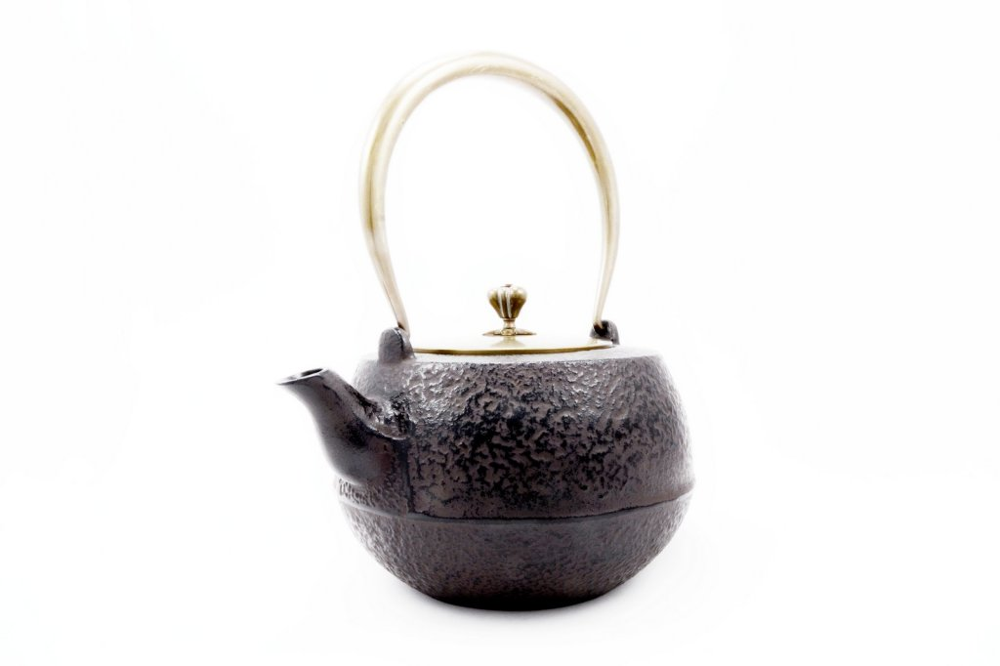

Главная

Чугунный заварочный чайник
Чугунные чайники широко используются с давних времен не только в Китае, но и в других странах Юго-Восточной Азии. Чайник
из чугуна – очень древний и проверенный инструмент, используемый для заваривания чая. Из-за высокой теплоемкости
чугуна такие чайники прекрасно подходят не только для заваривания чая, но и для хранения кипятка. В отличие от глины
чугунный чайник не боится смешения ароматов и годится для заваривания различных видов и сортов чая, в том числе и
пуэров. Так же хорошо подходит для заваривания зеленого чая: чайник забирает на себя часть тепла от кипятка, оставляя
заварке необходимые 60-80 градусов. Это изящная и красивая утварь. Чайник могут украшать разнообразные рисунки и
узоры, от канонического минимализма до изощренных узоров, изысканных художественных рисунков, изображающих различных
птиц, животных, драконов, растения, оттиски пейзажей… Чугунный чайник очень долговечен — его можно передавать из
поколения в поколение как семейную реликвию